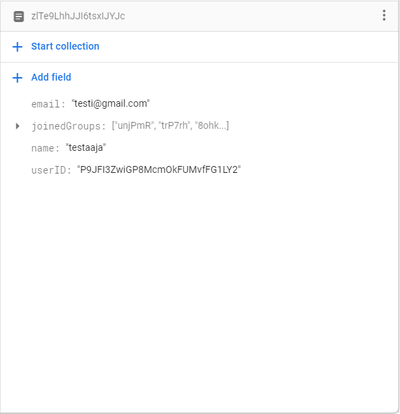

Lahja-Jaakko
| Projektin tyyppi: | JAMK / Demolab |
|---|---|
| FrontEnd: | Angular, Bootstrap |
| BackEnd (BaaS): | Firebase |
| Tietokanta: | Firebase firestore |
| Kielet: | JavaScript, Typescript, CSS, HTML5 |
| Ohjelmistot: | VS Code, GIT Bash, NPM, PowerShell |
| Projektin kesto: | 4kk |
| Tiimin koko: | 5 |
Lahja-Jaakko on web-sovellus, jonka tarkoituksena on helpottaa lahjojen hankintaa. Toimin projektissa päätoimisena ohjelmoijana, mutta olin mukana myös suunnittelussa sekä testauksessa.
Projektin alussa kokemukseni Angularin ja Firebasen käytöstä oli todella vähäistä. HTML ja CSS taas oli jo aika hyvin hallussa. Aluksi katselinkin paljon tutoriaaleja, joiden avulla opettelin perusteet. Firebasen opettelun ongelmaksi muodostui vähäinen materiaali. Kun perusteet alkoi olemaan hallussa, aloin toteuttamaan sovelluksen ominaisuuksia käyttäjäkertomusten perusteella. Tein projektissa mm. kaikki CRUD-operaatiot, lomakkeet sekä todella paljon HTML5 koodia. CSS ja Bootstrap oli toisen tiimiläisen vastuulla, mutta niidenkään oppimiselta en kuitenkaan välttynyt. Suunnittelun puolella hommiani oli mm. hyväksymiskriteereiden kirjoittelu ja PO:lle ideoiden ehdottelu. Testauksessa olin mukana alussa, johon tein mm. HTLP:tä sekä muutaman käyttäjäkertomuksen testisuunnitelmat ja testit.
Projektista saatua osaamista esittelen sovelluksen suurimmilla haasteilla, jotka olivat google-kirjautuminen sekä käyttäjän poisto, näistä esimerkit ala-puolella. Näytän myös lahjalistan toteutusta, jossa näkyy hyvin HTML-osaamiseni.
Google kirjautuminen:
Kirjautumis-sivulla löytyy "Sign In With Google" -painike, jota painamalla aukeaa googlen-kirjautuminen omassa ikkunassa, Kun kirjautuminen google-tilille on tehty, sovellus siirtyy etusivulle.
Firebase tarjosi google-kirjautumiseen valmiit metodit, mutta kirjautunut käyttäjä piti luoda myös tietokantaan. Ongelmana oli kuitenkin, että google-kirjautuminen toimi samaan aikaan myös rekisteröitymisenä. Tämä ratkaistiin sillä, että kirjautuessa luodaan käyttäjä tietokantaan, jos sitä ei ole olemassa.
Käyttäjän poisto:
Käyttäjän poisto löytyy sovelluksen profiili-sivulta. Käyttäjän poisto pitää sisällään käyttäjän poiston tietokannasta, käyttäjän luomien ryhmien poiston, käyttäjän poiston ryhmistä joihin hän on liittynyt sekä itse firebase autentikaatio tunnuksen poiston.
Firebasen firestore tietokannan yksinkertaisuus osoittautui haastelliseksi näin isossa operaatiossa.
Lahjalista:
Lahjalistasta haluan esitellä sen HTML puolta. Lahjojen muokkaus, poistaminen ja lisääminen olivat lähinnä yksinkertaisia CRUD-metodeita.
Lahjalista-sivu sisälsi ehkä sovelluksen haastavimman HTML-ratkaisun. Lahjat avautuvat collapsena sekä niitä pystyy muokkaamaan. Haasteiksi osoittautui aluksi lahjojen yksilöinti.
Tietokannan rakenne:
Ryhmillä on käyttäjiä sekä käyttäjillä ryhmiä, firebase tietokannalla ei ollut kuitenkaan mahdollista "linkata" näitä toisiinsa. Lähetettävä data määriteltiin lomakkeiden avulla.
Yleiskatsaus.
Käyttäjä:
Ryhmä:

Ryhmän luontiin käytettävä lomake:
data.service.ts:
// groupForm on lomake, joka määrittelee ryhmän datan.
groupForm = new FormGroup({
groupAdmin: new FormControl(''),
description: new FormControl(''),
event: new FormControl('', [Validators.required, Validators.minLength(3)]),
groupName: new FormControl('', [Validators.required, Validators.maxLength(30)]),
groupCode: new FormControl('Koodi'),
lahjalista: new FormControl({ lahja: { nimi: '', hinta: '' } }),
joinedUsers: new FormControl([]),
date: new FormControl(''),
});
Käyttäjän luontiin käytettävä lomake:
auth.service.ts:
// lomake, jota käytetään rekisteröintiin.
registerForm = new FormGroup({
email: new FormControl('', [Validators.pattern('^[a-zA-Z0-9_.+-]+@[a-zA-Z0-9-]+[.][a-zA-Z0-9-.]+$'), Validators.required]),
password: new FormControl('', [Validators.required, Validators.minLength(6)]),
name: new FormControl('', [Validators.required ,Validators.minLength(4),
Validators.maxLength(15), Validators.pattern('^[a-zA-Z0-9]+$')]),
confirmPassword: new FormControl('', [Validators.required]),
}, {validators: this.passwordConfirming});
// metodi, jolla katsotaan täsmääkö salasanat. käytetään rekisteröintilomakkeen validaatiossa.
passwordConfirming(c: AbstractControl): { invalid: boolean } {
if (c.get('password').value !== c.get('confirmPassword').value) {
return {invalid: true};
}
}
Testaus:
Tein projektissa myös käyttöliittymä testausta (manuaalisesti), ajan puutteen vuoksi testaaminen jäi itsellä kuitenkin vähäiseksi. Testailimme ominaisuuksia hyväksymiskriteereiden perusteella. Jokaiselle sprinttiin otetulle käyttäjäkertomukselle luotiin testisuunnitelma. Esimerkki ala-puolella.
Reflektio
Tämä oli ensimmäinen isompi web-applikaatio, jonka parissa olen työskennellyt. Joten oppiminen oli todella laaja-alaista. Toiminnallisuuksien koodaminen parani joka viikko, ja ensimmäisten viikkojen räpellykset alkoivat näyttämään kamalalta. Olen kuitenkin ylpeä itsestäni, että saatiin melko toimiva sovellus tehtyä, vaikka aiempaa kokemusta ei juurikaan ollut.
Tärkeimmät asiat mitä opin?
Asynkroninen ohjelmointi. Opin ketjuttamaan asynkronisia operaatioita (callbackit, promiset, observablet, subscribet). Teoria-puolta en vielä ymmärrä täysin, mutta käytännön osaaminen on jo melko hyvää.
Lomakkeiden tekeminen, niiden validaatiot sekä käyttö yhdessä HTML kanssa.
Firebase tietokannan toiminta sekä CRUD-metodit.
SCRUM:in toiminta käytännössä.
GIT: merget ja commitit.
Mitä olisit tehnyt toisin?
Olisin käyttänyt projektin alussa enemmän aikaa suunnitteluun.
Tietokanta/backEnd ratkaisua suunnitellessa olisin huomioinut paremmin sovelluksen kasvun.
Mitä osaamista haluaisit kehittää jatkossa?
Backend osaamista.
Teorian opiskelu, ainakin angularin osalta.
Automaatiotestaus.
Gitin oikeaoppinen käyttö.